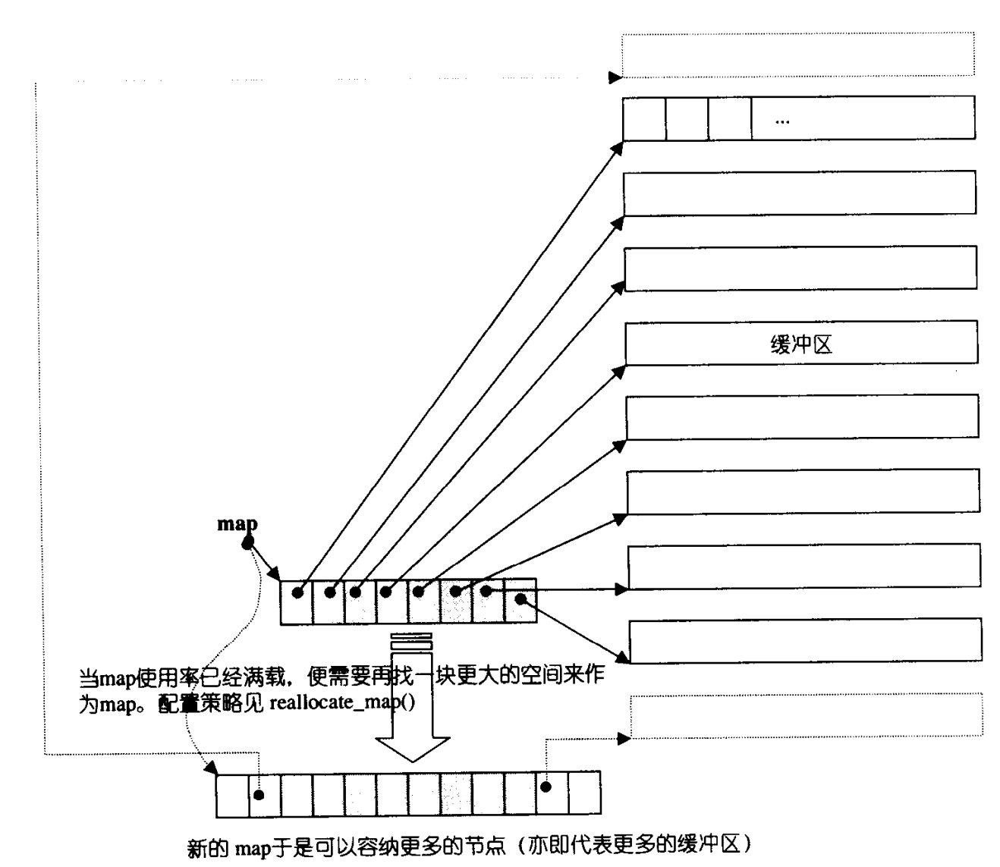

标准模板库(Standard Template Library, STL)是一个 C++ 软件库，大量影响了 C++ 标准程序库但并非是其的一部分。其中包含 5 个组件，分别为迭代器、容器、容器适配器、算法、函数。
#迭代器
#容器
#std::vector
底层维护了一个「在堆上的具有连续内存的数组」。
支持 的随机访问。
对于查找，无序 vector 为 ，有序 vector 可以利用二分查找降低至 。
对于插入和删除操作，都是在尾部最快，头部最慢（是因为跟普通数组一样存在元素的移动）。
特别的，标准库提供
vector<bool>的特化，它使得每个元素占用一个单独的位，而非sizeof(bool)字节，从而对空间效率进行了优化。
#迭代器 std::vector::iterator
vector 维护的是一个连续线性空间，所以不论其元素型别为何，普通指针都可以作为 vector 的迭代器而满足所有必要条件，因为 vector 迭代器所需要的操作行为，如
operator*,operator->,operator++,operator--,operator+,operator-,operator+=,operator-=，普通指针天生就具备。vector 支持随机存取，而普通指针正有着这样的能力。所以，vector 提供的是 Random Access Iterators。——选自《STL 源码剖析》
vector 内部维护了三个迭代器，分别是:
-
start: 指向数组起始； -
finish: 指向数组使用空间的尾部； -
end_of_storage: 指向数组可用空间的尾部；
vector::size()指容器内数组元素个数，而vector::capacity()指当前已分配的数组大小。计算方式为:
size= finish - start；capacity= end_of_storage - start。
通过直接使用指针的方式，vector 实现了随机访问与空间的快速计算。但是也正因为是指向数组某个位置的指针，存在迭代器失效的问题——在频繁的 CRUD 后，同一迭代器在操作前后指向的元素可能会不同，甚至会悬垂。
#扩容机制
vector 的核心在于其长度自动可变，即扩容机制: 当目前可用的空间不足（即 size = capacity 且有新元素要加入）时，分配目前空间的两倍或者目前空间加上所需的新空间大小（取较大值），将原有元素移动到新的内存空间后，释放原来的空间。
由于二倍扩容机制可能会导致内存的浪费（无法重新利用原来的内存），内存不足时扩容的拷贝也会造成较大性能开销。如果使用者能对容量有预期，那么采用
vector::reserve()来预先分配内存，将大大的提高性能。
#如何手动释放 vector 内存？
vector::clear() 方法仅仅移除元素，实际上底层分配的内存并不会随之减少，调用 vector::capacity() 时依然能够得到一个正值。
那么如何释放内存呢？比如一个 vector<int> nums， 比较 hack 的一种方式是 nums = {}，这样既可以清空元素还会释放内存。正规的做法是令一个空 vector（右值）调用 vector::swap() 进行底层数组的交换，交换后 nums 指向一个空数组，而另一个右值会在当前作用域结束后被回收。
一个手动释放 vector 内存的例子vector<int>().swap(nums); // nums 为待释放的 vector nums.swap(vector<int>()); // Error: Non-const lvalue reference to type 'vector<...>' cannot bind to a temporary of type 'vector<...>' 因为 swap 的形参类型是 T&，不能传递右值 // 第二种写法的解决方案如下 { vector<int> tmp{}; nums.swap(tmp); }
而当 vector 里面存了指针时，上面的做法并不会释放指针指向的那片内存，从而导致内存泄漏。应当首先遍历 vector 逐个 delete/free()。
释放每个指针for (auto&& iter = nums.begin(); iter != nums.end(); iter++) { if (*iter) { delete *iter; *iter = nullptr; } }
#emplace_back() 和 push_back() 的异同
两者都是在数组末尾追加元素。区别在于:
-
前者是直接根据传入的参数列表，通过
std::forward+placement new的方式在指定位置（数组末尾）进行初始化构造。 -
后者则需要调用拷贝/移动构造函数，效率较前者更低。
当然，如果当前
size == capacity，则会触发扩容。
#std::list
底层维护了一个「环状双向链表」。
不支持随机访问，只能通过遍历的方式，复杂度为 。
查找也是一样的，需要通过 的遍历。
当已定位到待插入/删除的位置时，插入和删除只需要调整指针的指向，复杂度为 。
list 的插入和删除并不会出现空间装满而重新扩容的情况，也不会引起迭代器失效——它对内存的控制是十分精准的，需要多少就分配多少，也就不会出现内部碎片（vector 有）。从而也可以思考出，调用
clear()函数就能完整释放内存。
#迭代器 std::list::iterator
由于 STL list 是一个双向链表(double linked-list)，迭代器必须具备前移、后移的能力，所以 list 提供的是Bidirectional Iterators。——选自《STL 源码剖析》
list 内部只维护了一个迭代器 node，即一个指向尾部空白节点的指针，这样就能够实现「前闭后开」的环状双向链表。
一些计算/判断方式:
begin= node->next；end= node；front= *(node->next)；back= *(node->prev)；empty= node->next == node ……其余均可依次推导。
#std::deque
底层维护了一个「由分段连续空间构成的双向队列」以及一个「中控器指针」。
支持随机访问，但性能比 vector 要差。
插入和删除操作在头/尾很快，为 ，但是在中间「非常非常」慢。
#中控器
所谓中控器，其实就是一个二级指针，或者说一个数组，存着指向每一个连续空间（或称缓冲区）的指针。deque 内部有一个变量表示这个中控数组的大小，当超载时也会触发和 vector 相似的扩容操作（但这里的元素仅仅是 64 位的指针，所以开销比较稳定）。每个缓冲区的大小是相同的（默认情况下缓冲区大小为 512B，可以通过模板参数自定义），所以随机访问时可以对缓冲区大小 buffer size 取模，求得去第几个缓冲区访问，然后通过中控数组定位即可。
这也就是为什么说虽然 deque 支持随机访问，但是性能比 vector 差了——需要进行两次数组访问。
#迭代器 std::deque::iterator
deque 内部维护了两个迭代器，分别是:
-
start: 指向第一个缓冲区的第一个元素； -
finish: 指向最后一个缓冲区的最后一个元素（的下一个位置）；
和 vector 一样，这两个都是基于连续空间实现的容器，也就存在迭代器失效的问题。
同时，为了能让迭代器在执行 operator++ 时，能从一个缓冲区的尾部跳转到下一个缓冲区的头部，其内部除了维护一个指向当前元素的指针 cur 外，还必须记录当前缓冲区的首尾指针 first/last，以及指向中控器数组相应位置的指针 node。
当需要进行缓冲区切换时，只需将 node 自增/自减，然后将 first 置为 *node，last 置为 *node + buffer size 即可。
#扩容机制
deque 的扩容主要分为以下两种:
-
缓冲区扩容: 当
push_front()时第一块缓冲区满，或push_back()时最后一块缓冲区满会触发缓冲区扩容，新分配一片 buffser size 大小的缓冲区，然后在中控数组首/尾部添加指针，同时更新迭代器start/finish； -
中控器扩容: 当缓冲区扩容，无法往中控数组中加入缓冲区指针时触发，新分配一块更大的中控数组，将原数组内的缓冲区指针拷贝过去，同时更新迭代器
start/finish。在这之后，重新进行缓冲区扩容的步骤；
为了减少中控器扩容的次数，应尽可能将缓冲区指针放在中控器数组的居中位置，这样前后都有足够空间进行缓冲区的扩容。
#内存释放
虽然当某个缓冲区为空时，不一定要立刻释放，因为后面可能还会通过 push 使得元素加入该缓冲区，但是 STL 为了实现简单，当 pop 操作使得某个缓冲区变空，就立刻将其释放。
#std::set/std::map
这两位底层都是基于「红黑树」实现的，内部元素依照 key 值自动排序（允许自定义比较函数），不允许出现重复的 key 值（通过红黑树的 insert_unique() 实现）。增删查改的时间复杂度近似 。
红黑树是一种弱平衡二叉搜索树，其性质如下:
- 每个结点非红即黑；
- 根节点是黑的；
- 如果一个结点是红色的，那么它的子节点必须得黑色的；
- 任一结点到树尾结点(NIL)的路径上含有的黑色结点个数必须相同；
- 尾结点(NIL)视为黑色；
- 新增结点必须是红色的；
通过以上定义的限制，红黑树确保没有一条路径会比其他路径多出两倍以上，但又不像 AVL 那样严格平衡，所以说是弱平衡的。
那么为什么不用平衡二叉树(AVL)呢？尽管 AVL 是高度平衡的，但频繁的插入和删除，会引起频繁的旋转操作，导致效率下降。而红黑树是一种弱平衡二叉树，相对于严格要求平衡的平衡二叉树来说，它的旋转次数更少（红黑树的插入最多两次旋转，删除最多三次旋转），所以对于插入、删除操作较多的情况下，通常使用红黑树。
map 仅仅比 set 多了一个 value 字段，二者都不能通过迭代器修改 key 的值。并且因为红黑树的特性，所有 key 其实都对应一个树结点，和 list 很像，当进行插入和删除时，不会出现迭代器失效的情况。
#std::multi_set/std::multi_map
和普通的 set/map 相比，他俩允许出现重复的 key 值（通过红黑树的 insert_equal() 实现）
#std::unordered_set/std::unordered_map
这两位底层都是基于「哈希表」实现的，是无序的。最优情况增删查改的时间复杂度是 ，最差情况为 ，出现这种差异是因为数据的分布是否均匀会极大影响容器的性能。
#冲突处理
以 unordered_map 为例，其底层哈希表采用桶+链法解决冲突，如下图:
每产生一次哈希冲突，就在当前 bucket 中链入新数据。而当同位置上的元素节点大于 8 个的时候，会自动转化为成一棵红黑树，用于降低长链表的查找压力。
另外，哈希表存储结构还有一个重要的属性，称为负载因子，用于衡量容器存储键值对的空/满程度。负载因子越大，意味着容器越满，即各链表中挂载着越多的键值对，这无疑会降低容器查找目标键值对的效率；反之，负载因子越小，容器肯定越空，但并不一定各个链表中挂载的键值对就越少。如果设计的哈希函数不合理，使得各个键值对的键代入该函数得到的哈希值始终相同（所有键值对始终存储在同一链表上），这种情况下，即便增加桶数使得负载因子减小，该容器的查找效率依旧很差。
#哈希函数 HashFcn 与去重规则 EqualKey
默认情况下，unordered set/unordered map 使用了 STL 为我们提供的默认哈希函数 std::hash 对 key 进行哈希，与 std::equal_to 进行去重。这两者对一些常用类型如 int/std::string 做了特化，所以可以直接使用这些类型作为 key 值。
当我们需要设置自定义对象作为 key 时，就需要自行特化 std::hash<UserObject> 和 std::equal_to<UserObject>，否则构造 unordered_*<UserObject, *> 时会报错。而 value 则无此限制。
#容器适配器
#std::stack/std::queue
根据这两者的逻辑特性，并不需要特地实现新的容器，只需要在原有的容器基础上进行修改即可：
-
对于 stack，底层容器最好能提供单端
push/pop的功能，可以考虑使用 vector/list/deque； -
对于 queue，底层容器最好能提供双端
push/pop的功能，但是考虑到 vector 在首部进行增删的效率极低，所以推荐使用 list/deque；
默认情况下，二者都基于 deque 进行实现。
以 stack<T, deque<T>> 为例，push() 实际上就是调用了 deque::push_back()，说明是在尾端进行增删，那么取栈顶元素和弹出栈顶元素的操作也显而易见了。
⚠️需要注意的是，这两者本身不提供遍历功能，也就都没有实现各自的迭代器类型。
#std::priority_queue
默认以 vector 作为底层容器，以「堆」作为处理规则。与 queue 不同，它虽然也允许元素以任意顺序加入容器，但每次取出的一定是「优先级最高」的元素，而非 FIFO。
#比较规则 comp
priority_queue 允许自定义比较规则，其应当是一个实现了 bool operator()(const &a, const &b) 的结构体/类，返回值为 true 表示 lhs 的优先级比 rhs 的优先级小。
默认情况下使用 std::less<T> 作为比较规则，其实现形式可能是下面这样，也就意味着元素值越「小」，优先级越低。所以当我们使用 priority_queue<int> 时，总是能取到优先队列中的最大值。
std::less 的可能实现形式template<class T> struct less { bool operator()(const T& a, const T& b) { return a < b; } };
如果不想实现比较规则，也可以考虑重载对象的
operator<函数，效果是一样的。
#算法
#std::sort
std::sort 考虑了不同 workload 下的排序性能，并将其结合，表现为：数据量大时，使用 Quick Sort 分段递归排序；一旦分段后的数据量小于某个阈值，改用 Insertion Sort；若递归层数过深（当数据量大且基本有序时容易发生），还会改用 Heap Sort。当然，它只接受随机存取迭代器(RandomAccessIterators)（通常是 begin() 与 end()），允许用户自定义比较规则，其应当是一个实现了 bool operator()(const &a, const &b) 的结构体/类，返回值为 true 表示 lhs 小于 rhs。默认情况下使用 std::less<T> 作为比较规则，所以当我们仅传入前两个参数时，函数会将容器进行递增排序。
下面默认只传入前两个参数。
#Insertion Sort
Insertion Sorttemplate <class RandomAccessIterator> void __insertion_sort(RandomAccessIterator first, RandomAccessIterator last) { if (first == last) return; for (RandomAccessIterator i = first + 1; i != last; ++i) __linear_insert(first, i, value_type(first)); // 将迭代器 i 指向的元素插入区间 [first, i) 中 } template <class RandomAccessIterator, class T> inline void __linear_insert(RandomAccessIterator first, RandomAccessIterator last, T*) { T value = *last; if (value < *first) { copy_back_ward(first, last, last + 1); // 直接将区间整体右移 *first = value; } else __unguarded_linear_insert(last, value); // 保证不会越界 // 否则每次循环都需要判断一下是否越界，在数据量大的情况下影响还是可观的 } template <class RandomAccessIterator, class T> void __unguarded_linear_insert(RandomAccessIterator last, T value) { // 这里就不断循环交换即可，直至 value >= next 指向的元素 RandomAccessIterator next = last; --next; while (value < *next) { *last = *next; last = next; --next; } *last = value; }
#Quick Sort
上面是 Insertion Sort 的部分，当数据量小时性能优于 Quick Sort，但是当数据量增大时其 的时间复杂度还是令人摇头。这种情况下就需要 Quick Sort 来解决了。
std::sort 对 Quick Sort 做的第一个优化是，以 Median-of-Three 的方式选出合适的 pivot，即取整个序列的头、尾、中央三个位置的元素，以其**中值(median)**作为 pivot，这样能够保证在划分时不会出现空的子区间。
Median-of-Threetemplate <class T> inline const T& __median(const T& a, const T& b, const T& c) { if (a < b) if (b < c) // a < b < c return b; else if (a < c) // a < c <= b return c; else // c < a < b return a; else if (a < c) // b <= a < c return a; else if (b < c) // b < c <= a return c; else return b; }
接下来就是**划分(partion)**了，通过线性遍历将序列中小于 pivot 的放到左侧，大于 pivot 的放到右侧，就完成了划分操作。
partiontemplate <class RandomAccessIterator, class T> RandomAccessIterator __unguarded_partion(RandomAccessIterator first, RandomAccessIterator last, T pivot) { while (true) { while (*first < pivot) ++first; --last; while (pivot < *last) --last; if (!(first < last)) return first; // 说明划分完毕 iter_swap(first, last); // 交换元素值 ++first; } }
第二个优化是，不会只让 Quick Sort 将数据就这么排好，而是令其某个大小的子序列达到某个「差不多排好」的状态，然后用一次 Insertion Sort 将这个子序列做一次完整的排序。原理自然是因为面对基本有序的数组，Insertion Sort 的性能远远超过 Quick Sort。
接下来就是完整的 std::sort 实现了。
sortconst int __stl_threshold = 16; template <class RandomAccessIterator> inline void sort(RandomAccessIterator first, RandomAccessIterator last) { if (first != last) { __introsort_loop(first, last, value_type(first), __lg(last - first) * 2); __final_insertion_sort(first, last); } } template <class RandomAccessIterator, class T, class Size> void __introsort_loop(RandomAccessIterator first, RandomAccessIterator last, T*, Size depth_limit) { // 全局定义了 const int __stl_threashold = 16; while (last - first > __stl_threshold) { if (depth_limit == 0) { partial_sort(first, last, last); // 改用 Heap Sort return; } --depth_limit; } RandomAccessIterator cut = __unguareded_partition( first, last, T(__median(*first, *(first + (last - first) / 2), *(last - 1)))); __introsort_loop(cut, last, value_type(first), depth_limit); // 先对右半部分递归排序 last = cut; // 然后在下个循环对左半部分递归排序 } template <class RandomAccessIterator> inline void __final_insertion_sort(RandomAccessIterator first, RandomAccessIterator last) { if (last - first > __stl_threshold) { __insertion_sort(first, first + __stl_threshold); __unguarded_insertion_sort(first + __stl_threshold, last); } else { __insertion_sort(first, last); } }